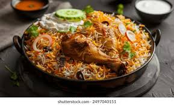
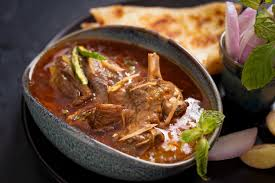

Biryani is one of the most popular and loved dishes of Pakistan. It is made with fragrant basmati rice, spices, and meat such as chicken, beef, or mutton. Pakistani biryani is known for its rich taste, spicy flavor, and beautiful aroma. It is commonly served at weddings, family gatherings, and special occasions.

Nihari is a traditional Pakistani curry made with slow-cooked beef or mutton in a spicy gravy. It is usually eaten as a breakfast dish and served with naan or roti. Nihari is famous for its thick texture, strong spices, and delicious taste.